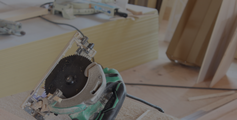

登録内装仕上工事基幹技能者 在籍
内装仕上工事業
一都三県／店舗・商業施設・ビル・公共施設・マンション
沿革・代表メッセージ・今後の展望は、別ページにまとめています。
創業以来、無事故で工事を続けています。毎日の朝礼を欠かさず行ない、あわせてスタッフの体調をチェック。資材の置き場や切粉の処理、他業者との動線にも配慮し、片付いた状態で現場を引き継ぎます。
〒350-1134 埼玉県川越市扇河岸107-31